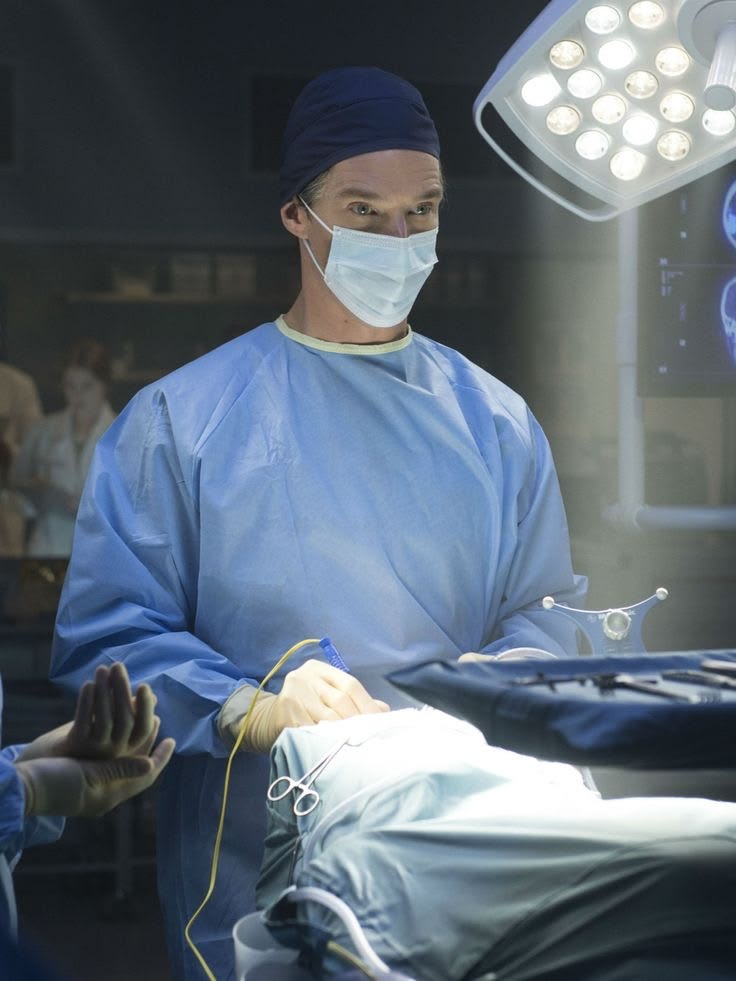
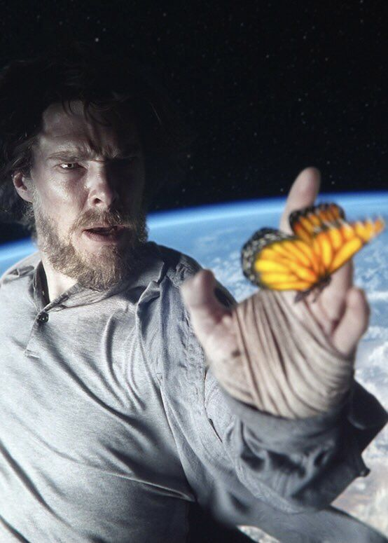
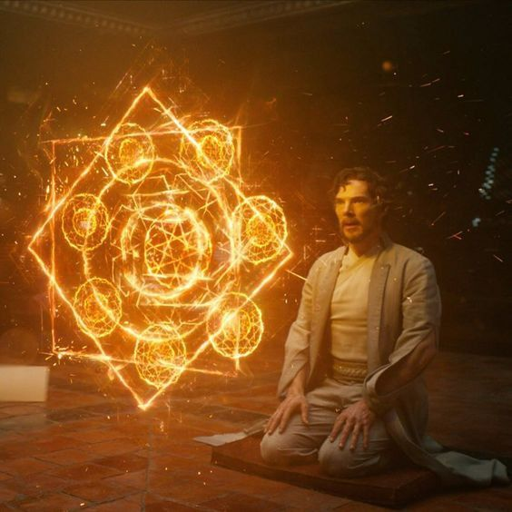
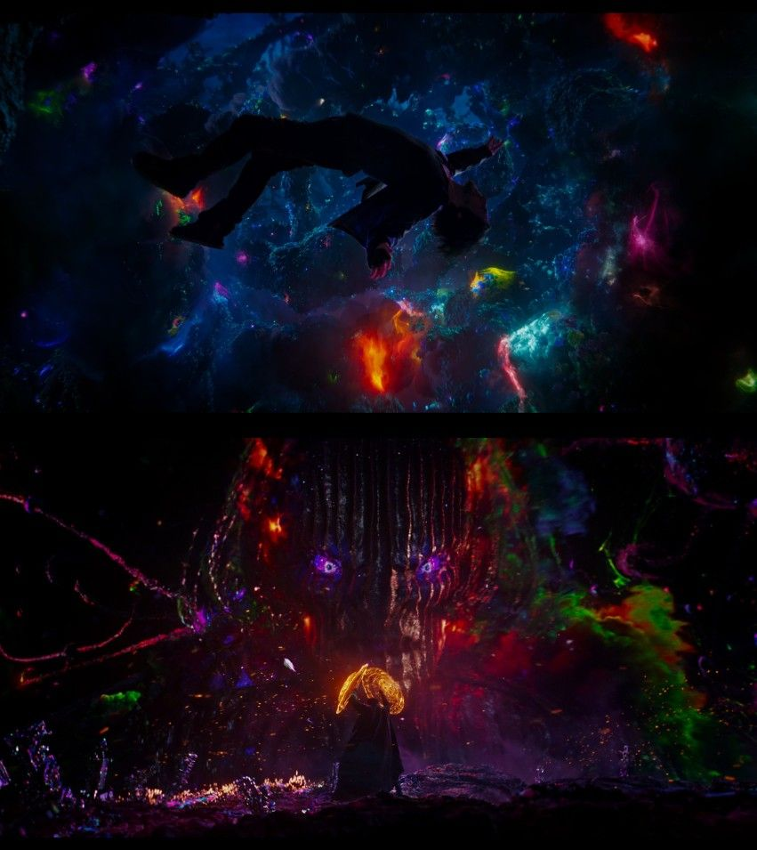

Doctor Strange: El Hechicero Supremo

La historia comienza con el Dr. Stephen Strange,uno de los neurocirujanos más brillantes y egocéntricos
del mundo en Nueva York. Su vida cambia drásticamente
tras un terrible accidente automovilístico que destroza
los nervios de sus manos. Al perder su capacidad para
operar y agotar su fortuna en tratamientos experimentales
que fallan, Strange cae en la desesperación.
El Viaje a Kamar-Taj

Tras escuchar rumores sobre una curación milagrosa,viaja a Katmandú, Nepal, en busca de un lugar
llamado Kamar-Taj. Allí conoce a La Ancestral,
quien le revela que el mundo físico es solo una
de las muchas realidades existentes. Aunque al
principio Strange es escéptico, ella le muestra
proyecciones astrales y dimensiones alternativas,
convenciéndolo de que la magia es una forma de
"programación" de la realidad.
El Aprendizaje y el Multiverso

Strange se convierte en un estudiante de las artesmísticas bajo la tutela de Wong y Mordo. Aprende que
el Multiverso es un conjunto infinito de realidades
paralelas, algunas pacíficas y otras extremadamente
peligrosas. Descubre el Ojo de Agamotto, un artefacto
que le permite manipular el tiempo, y comprende que
su deber no es curar cuerpos, sino proteger
la estructura misma de la realidad.
La Amenaza de la Dimensión Oscura
 El conflicto estalla cuando Kaecilius, un antiguo alumno
El conflicto estalla cuando Kaecilius, un antiguo alumno
de La Ancestral, intenta traer a la Tierra a Dormammu,
un ser de poder infinito que gobierna la Dimensión Oscura
(un lugar donde el tiempo no existe). Kaecilius cree
que la vida eterna en esa dimensión es un regalo,
sin entender que es una condena de servidumbre eterna.
El Bucle Temporal y el Sacrificio

En el clímax de la historia, Strange utilizala Gema del Tiempo para crear un bucle infinito dentro
de la Dimensión Oscura. Atrapa a Dormammu en un momento
repetitivo donde el demonio lo mata una y otra vez.
Strange le ofrece un trato: romperá el bucle y lo dejará
libre si Dormammu abandona la Tierra y se lleva a
sus seguidores. Strange acepta morir miles de veces
con tal de salvar el mundo, consolidando su transformación
de hombre egoísta a protector de la humanidad.